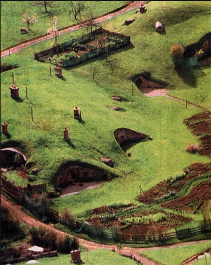
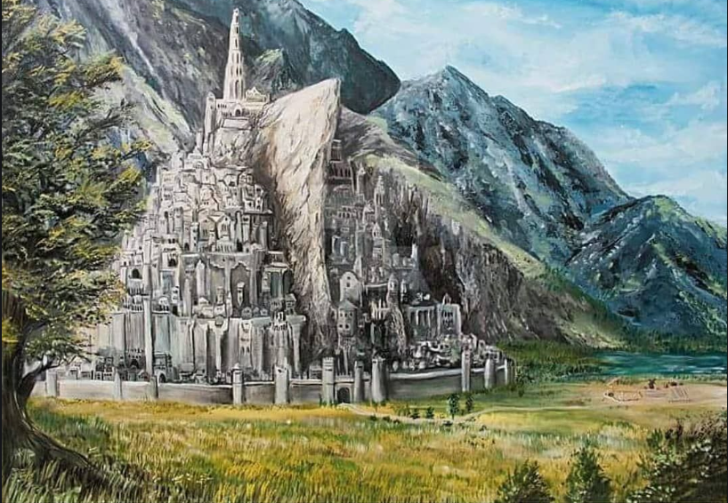
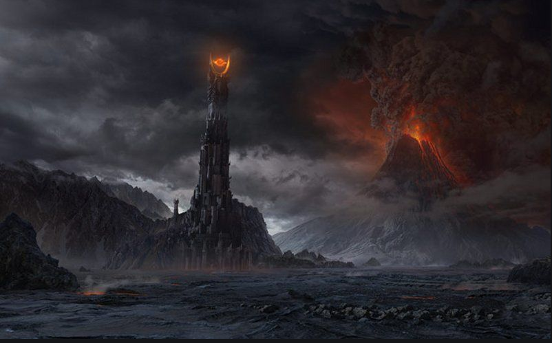

The lord of the rings Fan Page:A trip inside middle earth! Places



Shire
The shire is the place where our little portagonist live the hobbits.It was located in the northwestern part of the map of middle earth, of the region of Eridadior.There were the remains of the Kingdom of Arnor
Minas Tirith(capital city of Gondor)
Minas tirith is the capital city of Gondor and its is located in the north east of the middle earth map.Minas Tirith is opposite from the great osgilitath which now is in ruins.
Mordor
Mordor is no mans land;its a volcanic plain locatedf in the southeast of the middle eart map oppsoite form Gondor.the dark lord Sauron chose Mordor because it could provide good natural fortress against his enemies due to the three mountains that surround it.